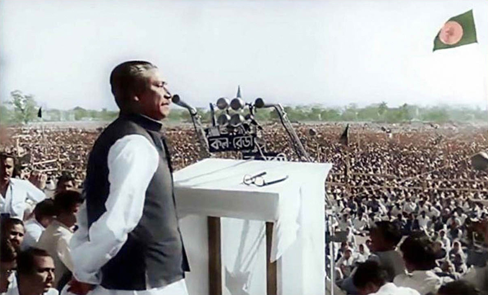
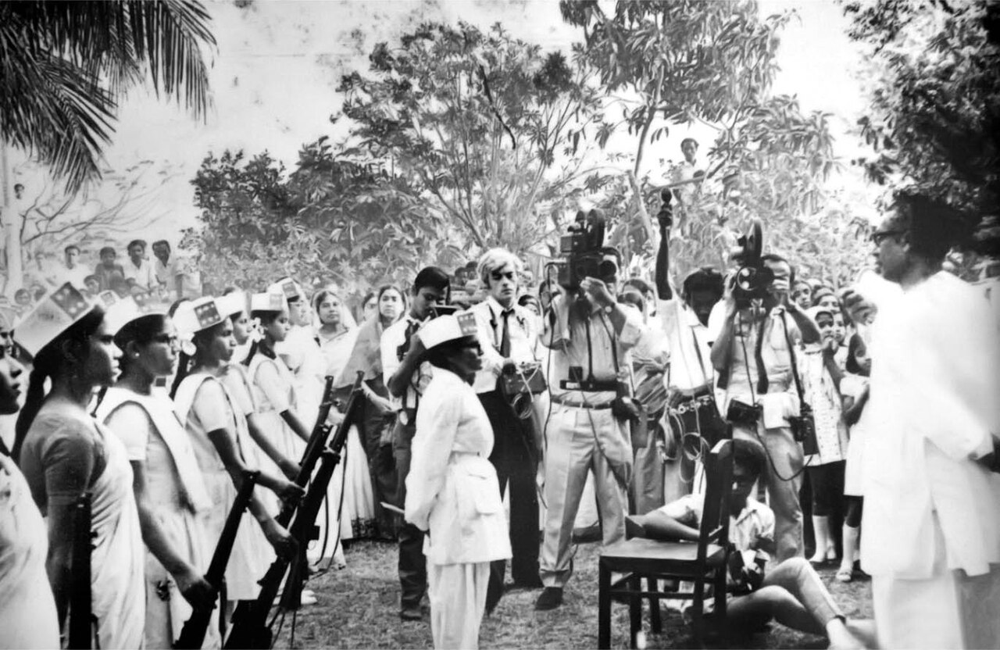
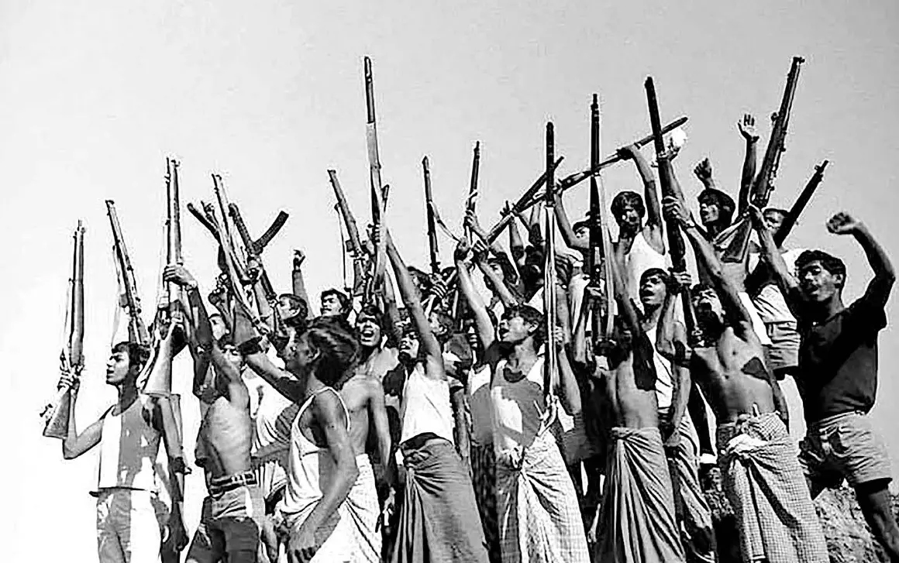
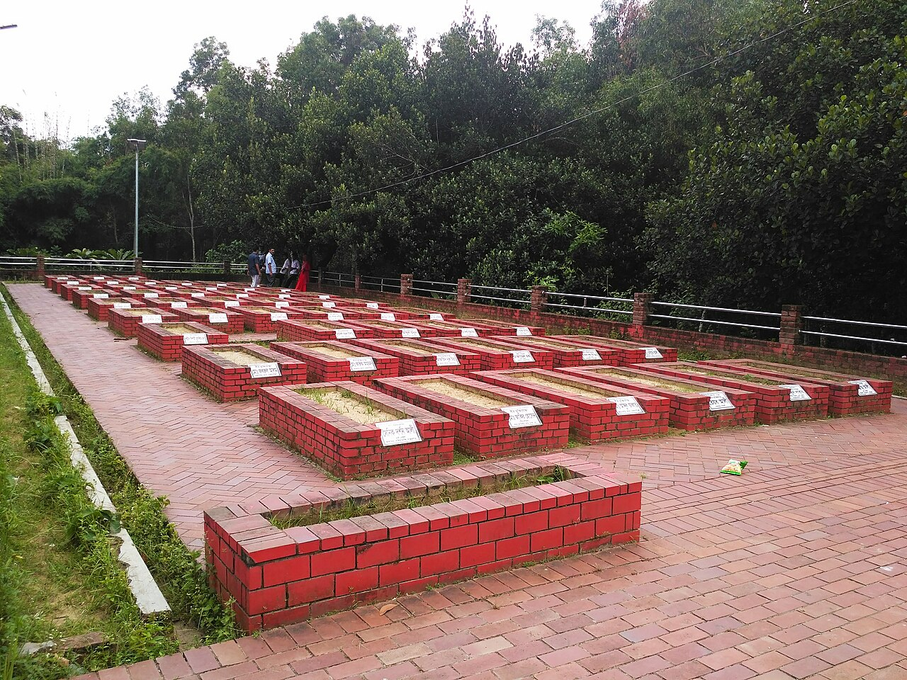
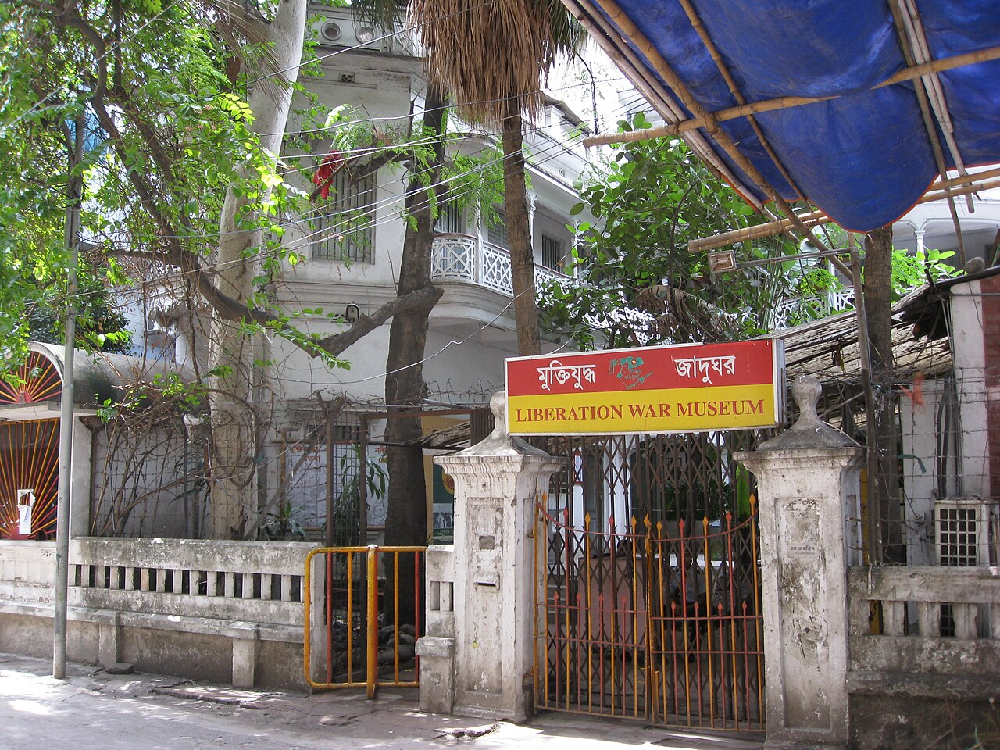
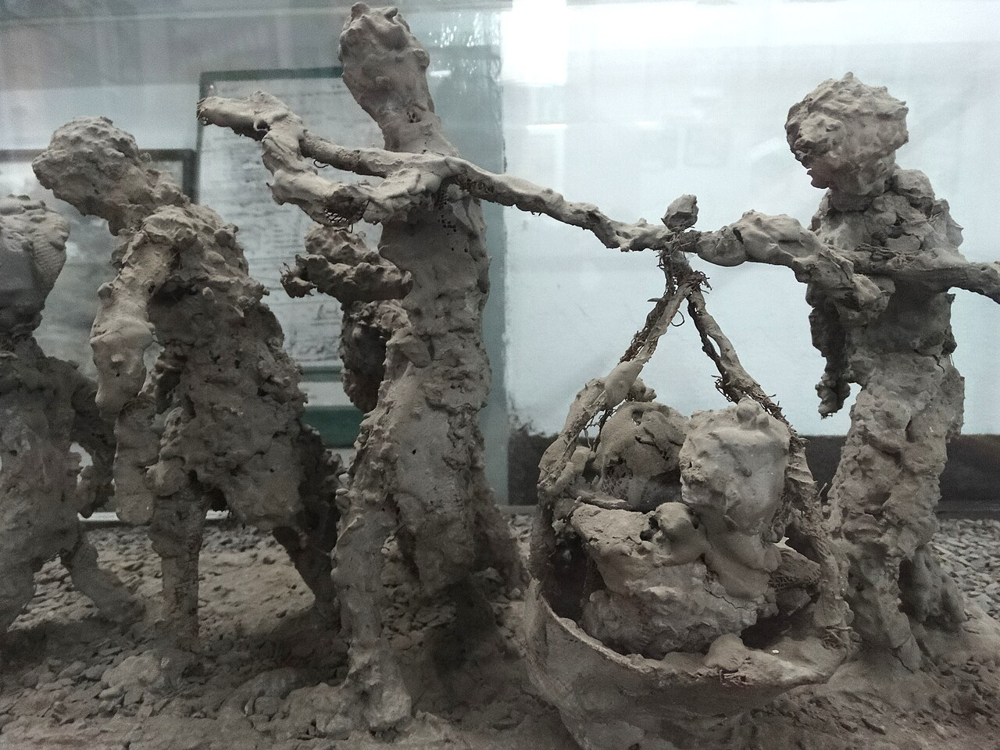

Explore the gallery
Hover over a photograph to see it up close. Each image includes its source and reuse terms.

The 7 March speech, 1971Press Information Department / Wikimedia Commons (public domain)

Women freedom fighters trainingPress Information Department / Wikimedia Commons (public domain)

Independence celebrations, 16 December 1971Anwar Hossain / Press Information Department / Wikimedia Commons (public domain)

Kullapathar Martyrs MemorialSalim Khandoker / Wikimedia Commons (CC BY-SA 4.0)

Liberation War Museum, Dhakatayloranddayumi / Wikimedia Commons (CC BY 2.0)

A memorial sculpture at the museumAdam Jones / Wikimedia Commons (CC BY-SA 2.0)